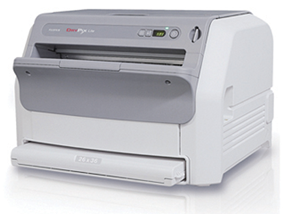
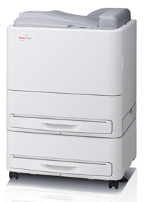
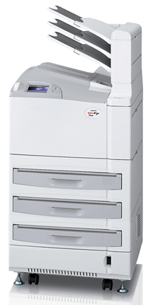
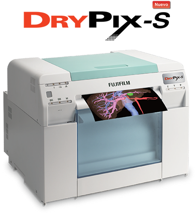

Línea drypix
DESCRIPCIÓN:
Nuestras impresoras DRYPIX tienen capacidades extraordinarias en cuanto a calidad de imagen y conectividad, ya que otorgan imágenes claras y precisas con alto nivel diagnóstico.
Todos nuestros equipos cuentan con el sistema ECO-DRY, el cual es amigable con el medio ambiente.
DRYPIX Lite

DESCRIPCIÓN:
Es una impresora térmica que se puede configurar con una o dos bandejas de almacenamiento de películas en distintos tamaños.
CARACTERÍSTICAS:
• Resolución: 300 dpi (84.7 um).
• Ajuste de densidad automático.
• Escala de grises: 12 bits.
• Capacidad de procesamiento: aproximadamente 50 películas por hora en 35 x 43 cm (14” x 17”).
• Aproximadamente 75 películas por hora en 26 x 36 cm (10” x 14”).
• Aproximadamente 65 películas por hora en 25 x 30 cm (10” x 12”).
• Aproximadamente 90 películas por hora en 20 x 25 cm (8” x 10”).
• Dimensiones: 610 x 630 x 893 mm.
• Peso: 104 kg (229.3 lbs).
Los tipos de película que emplea son:
DI-HT
35 x 43 cm (14” x 17”).
26 x 36 cm (10” x 14”).
25 x 30 cm (10” x 12”).
20 x 25 cm (8” x 10”).
Drypix Smart

DESCRIPCIÓN:
Es una impresora láser que cuenta con dos bandejas de almacenamiento de películas en distintos tamaños.
CARACTERÍSTICAS:
Resolución: (508 dpi) para Mamo/(254 dpi).
Ajuste de densidad automático.
Escala de grises: 14 bits.
Capacidad de procesamiento: aproximadamente 80 películas por hora en 35 x 43 cm (14” x 17”).
Aproximadamente 100 películas por hora en 26 x 36 cm (10” x 14”).
Aproximadamente 100 películas por hora en 25 x 30 cm (10” x 12”).
Aproximadamente 100 películas por hora en 20 x 25 cm (8” x 10”).
Dimensiones: 610 x 630 x 893 mm.
Peso: 104 kg (229.3 lbs).
Los tipos de película que emplea son:
|
DI-HL (Base Azul) |
DI-ML (Base Azul) |
|
35 x 43 cm (14” x 17”) |
26 x 36 cm (10” x 14”) |
|
26 x 36 cm (10” x 14”) |
25 x 30 cm (10” x 12”) |
|
25 x 30 cm (10” x 12”) |
20 x 25 cm (8” x 10”) |
|
20 x 25 cm (8” x 10”) |
DRYPIX Plus

DESCRIPCIÓN:
Es una impresora láser que cuenta con tres bandejas de almacenamiento de películas en distintos tamaños.
CARACTERÍSTICAS:
Resolución: (508 dpi) para Mamo/(254 dpi).
Ajuste de densidad automático.
Escala de grises: 14 bits.
Capacidad de procesamiento: aproximadamente 110 películas por hora en 35 x 43 cm (14” x 17”).
Aproximadamente 160 películas por hora en 26 x 36 cm (10” x 14”).
Aproximadamente 160 películas por hora en 25 x 30 cm (10” x 12”).
Aproximadamente 160 películas por hora en 20 x 25 cm (8” x 10”).
Dimensiones: 600 x 585 x 1090 mm.
Peso: 160 kg (353 lbs).
Los tipos de película que emplea son:
|
DI-HL (Base Azul) |
DI-ML (Base Azul) |
|
35 x 43 cm (14” x 17”) |
26 x 36 cm (10” x 14”) |
|
26 x 36 cm (10” x 14”) |
25 x 30 cm (10” x 12”) |
|
25 x 30 cm (10” x 12”) |
20 x 25 cm (8” x 10”) |
|
20 x 25 cm (8” x 10”) |
|
|
COMPATIBILIDAD DRYPIX |
||
|
EQUIPO |
DP LITE |
DP SMART |
DP PLUS |
|
PRIMA II |
|
|
|
|
PRIMA T2 |
|
|
|
|
PRIMA Tm |
|
|
|
|
CÁPSULA XLII |
|
|
|
|
PROFECT CS PLUS |
|
||
DRYPIX S

DESCRIPCIÓN:
Impresora a color de alta calidad de imagen para US, CT, MRI.
(DICOM).
CARACTERÍSTICAS:
Método de impresión: inyección de tinta.
Tamaño de impresión: A4.
Velocidad de impresión: 100 hojas por hora.
Resolución: 1440 dpi.
Tipo de papel: Lustre o brilloso.
Cartuchos de tinta: 6.
Dimensiones: 460 x 430 x 354 mm.
Peso: 23 kg.
DATOS COMPLEMENTARIOS: En FUJIFILM de México queremos convertirnos en su mejor aliado, es por eso que estamos comprometidos con nuestros clientes y ofrecemos el mejor servicio posventa.
FUJIFILM DE MÉXICO, S.A. de C.V.
Teléfono: (55) 5263-5500
e-mail: imagenologia@fujifilm.com.mx
www.fujifilm.com.mx